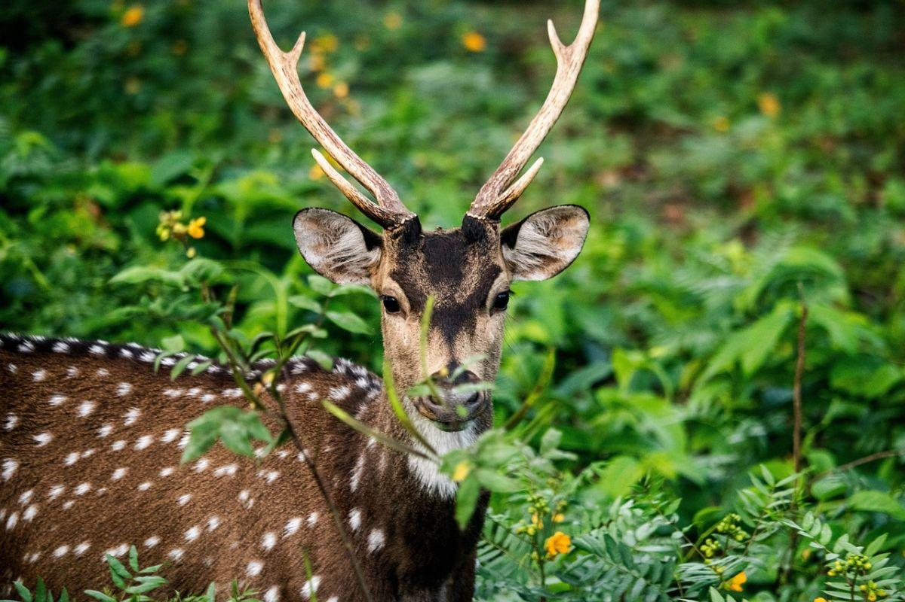
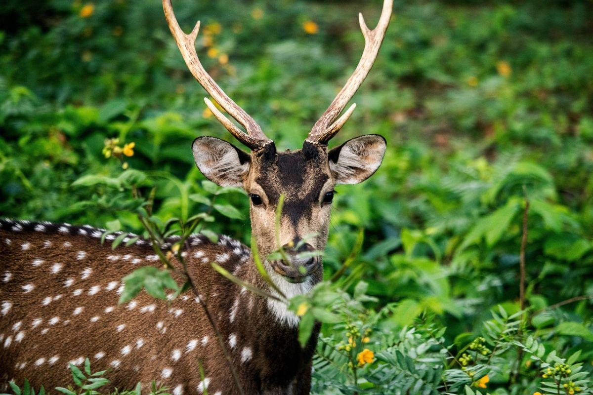
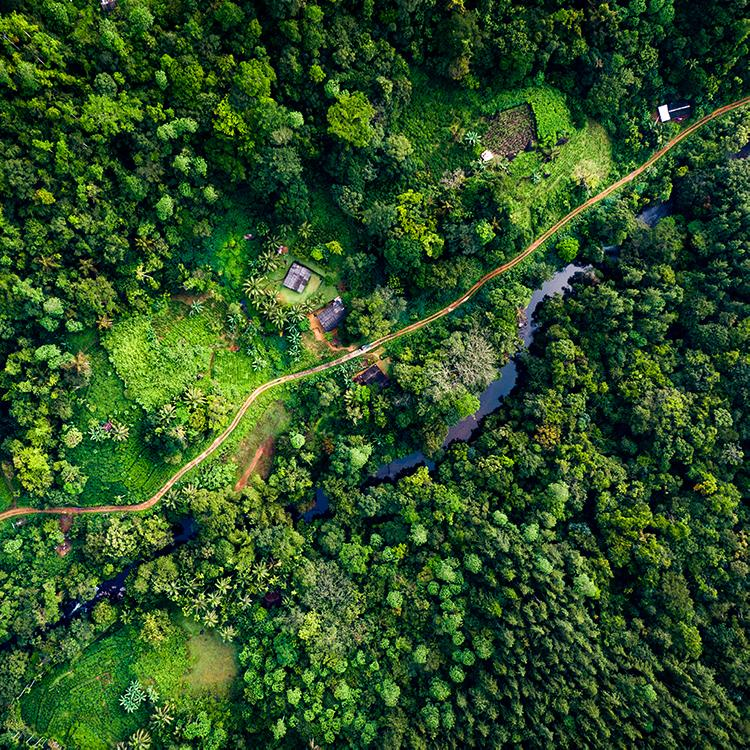
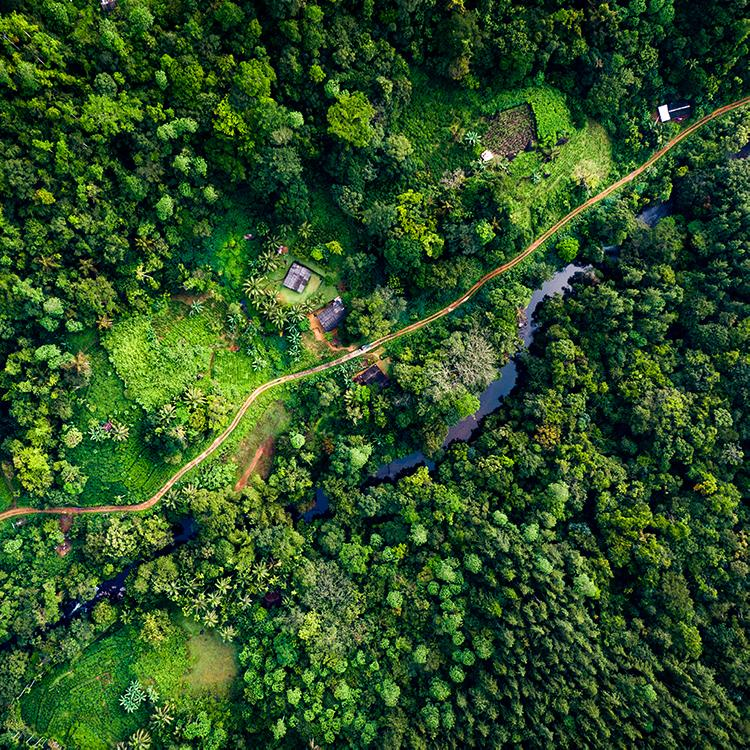
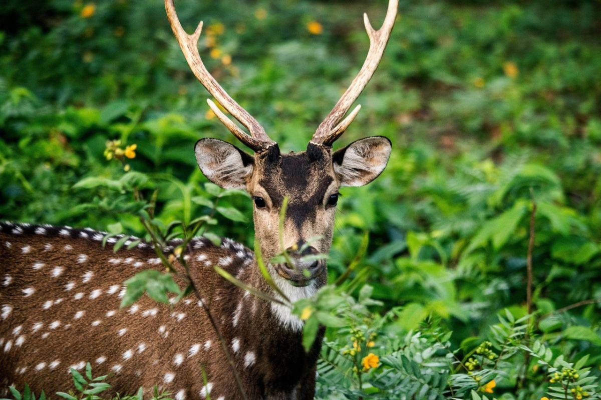
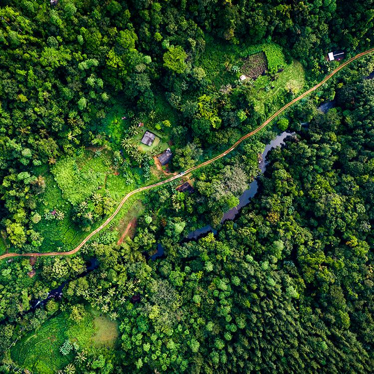

Our Location
SRI LANKAN VARIOUS SPOTTING
 

 

Sri Lanka boasts a remarkable array of wildlife within its diverse landscapes, earning it a reputation as a biodiversity hotspot. Its lush rainforests, serene wetlands, and vast national parks provide habitats for a wide spectrum of species. The island is renowned for its population of Asian elephants, leopards, and sloth bears, thriving in protected areas like Yala and Wilpattu National Parks. Sri Lanka also teems with vibrant birdlife; the Sinharaja Forest Reserve, a UNESCO World Heritage Site, hosts an impressive variety of endemic bird species. Coastal regions offer a glimpse of marine life, including whales, dolphins, and sea turtles. However, despite these riches, challenges such as habitat fragmentation and human-wildlife conflict pose threats to several species, underlining the importance of conservation efforts to safeguard this unique wildlife heritage.

